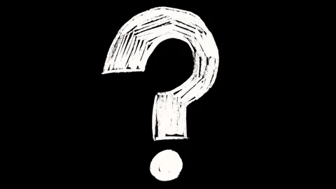

Neons are collectibles that are claimed throughout Byul's Journey. Each Shard she collected will gain the Moon enough power to generate Neons shaped by its memories that can glow thanks to the energy transmited from the Sun. the formula for given percentages is : (nbrShards / 367)*100
Current percentage: {{percentage.toFixed(2)}}%
0% (free)


10%
@if (percentage >= 10) {

} @else {

}
25%
@if (percentage >= 25) {

} @else {
}
50%
@if (percentage >= 50) {

} @else {
}
80%
@if (percentage >= 80) {

} @else {
}
100%
@if (percentage === 100) {

}@else {
}
} @else {